PR303 - Virtualización servidor/cliente, enrutamiento y NAT¶
Objetivo¶
Montar un entorno servidor/cliente aislado de la red física en GNS3, configurando un servidor Ubuntu con dos interfaces (una hacia Cloud/NAT y otra hacia una red interna), habilitar enrutamiento y NAT con iptables, y verificar conectividad desde un cliente Ubuntu Desktop. Opcionalmente, desplegar Apache y una appliance WordPress.
Requisitos previos¶
- GNS3 instalado y operativo (local o con GNS3 VM).
- Imágenes/appliances básicas disponibles (Ubuntu Server 24.04, Ubuntu Desktop, NAT/Cloud, switch genérico).
- Conocimientos de C03 (direcciones IP, puerta de enlace, DNS, enrutamiento, NAT, SSH e iptables).
Escenario¶
Componentes:
- Un dispositivo Cloud o NAT según el sistema anfitrión.
- Un switch genérico.
- Un servidor Ubuntu (24.04) con dos interfaces:
ens3(externa, DHCP) yens4(interna, estática: 10.10.1.1/24). - Un cliente Ubuntu Desktop en la red interna (
10.10.1.0/24).
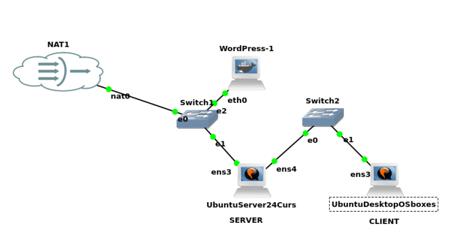
Topología de red para la práctica:
El diagrama ilustra la arquitectura para PR303, compuesta por:
- NAT1: proporciona acceso externo simulando la salida a Internet.
- Switch1: conecta el NAT y los dispositivos internos.
- WordPress-1: opcional, servidor WordPress.
- Servidor Ubuntu (
UbuntuServer24Curs): tiene dos interfaces:ens3: red hacia el NAT (externa, DHCP)ens4: red interna (estática, 10.10.1.1/24)- Switch2: conecta la red interna.
- Cliente Ubuntu Desktop (
UbuntuDesktopOSboxes): conectado a la red interna (10.10.1.0/24), puerta de enlace 10.10.1.1.
Referencia gráfica
La imagen refleja claramente la separación entre red externa (NAT) y red interna (cliente-servidor), así como la función de cada interfaz. Puedes usar este diagrama como referencia visual en la documentación de la práctica.
Entrega de la práctica¶
El informe entregable debe incluir, al menos:
- Captura de la topología final en GNS3.
- Salidas de
ip ayip routedel servidor y del cliente. - Capturas de pings internos y externos.
- Capturas de acceso a Apache y al panel de administración de WordPress.
- Breve descripción de los problemas encontrados y cómo se han resuelto (errores de red, iptables, DNS, etc.).
Pasos¶
1. Importar proyecto base¶
- File → Import portable project.
- Esperar a que finalice la copia (puede tardar varios minutos).
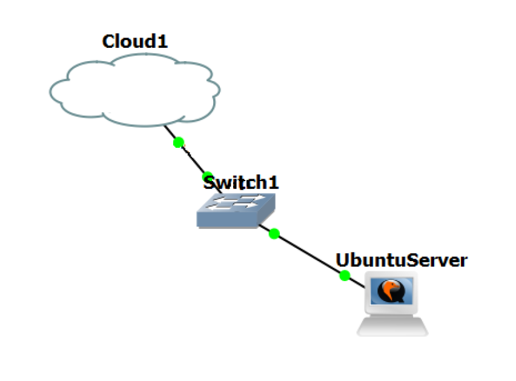
2. Crear plantilla a partir de una existente (QEMU)¶
- Preferences → QEMU → New template → Copy una VM de referencia (p. ej. Ubuntu Desktop/Guest).
- Editar y sustituir el disco por el
*.vmdkdel servidor importado. - Ajustar nombre, RAM y consola si procede.
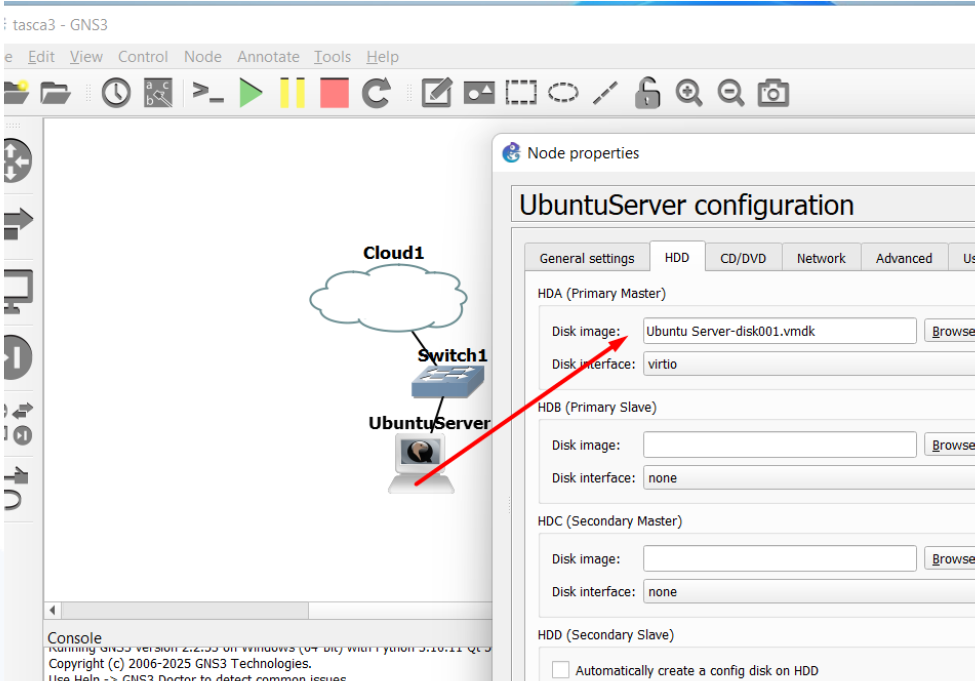
Ubuntu Server-disk01.vmdk en la pestaña correspondiente (HDD Primary Master).
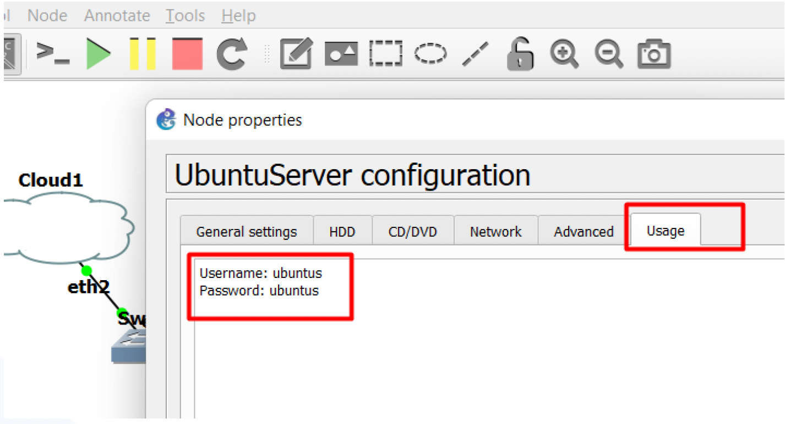
ubuntu, contraseña: ubuntu), necesarias para el acceso inicial al sistema operativo tras el despliegue en la topología virtual.
3. Adaptar el dispositivo Cloud/NAT¶
- Linux recomendado: dispositivo NAT (red 192.168.122.0/24 mediante
virbr0). - Windows recomendado: Cloud en modo Bridge (o NAT por defecto) para integrarse con la red física.
- Conectar Cloud/NAT ↔ switch.
Nota
Es recomendable eliminar el dispositivo Cloud/NAT importado y volver a crearlo en GNS3, en lugar de reutilizar el que viene en el proyecto base. Esto evita posibles errores de configuración o incompatibilidades con la red del anfitrión.
4. Configurar el servidor Ubuntu¶
1) Dos adaptadores en la plantilla VM. Renombrar interfaces personalizadas a ens3 y ens4.
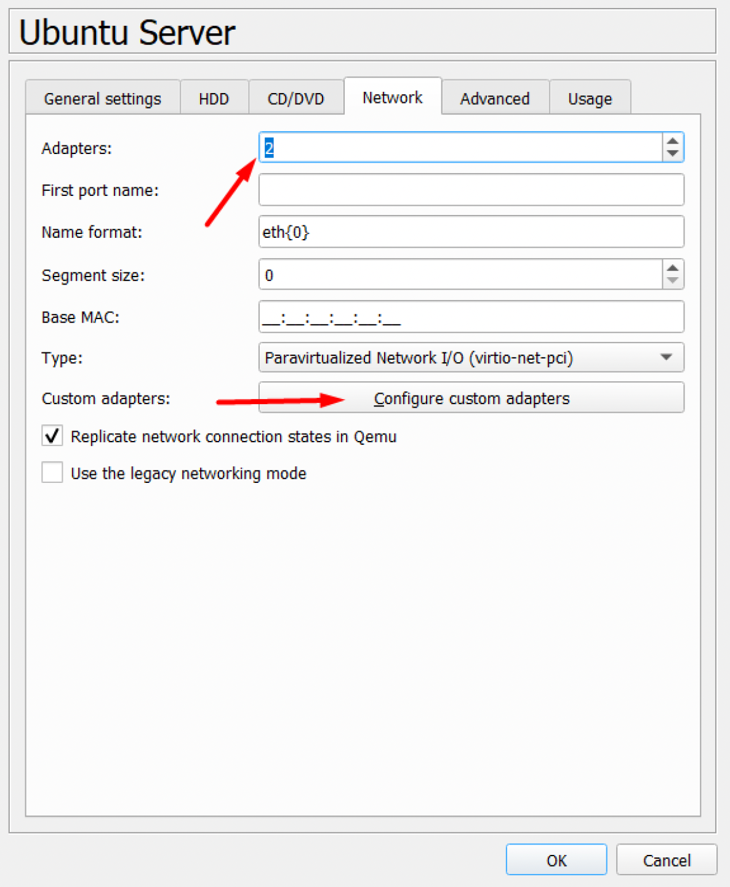
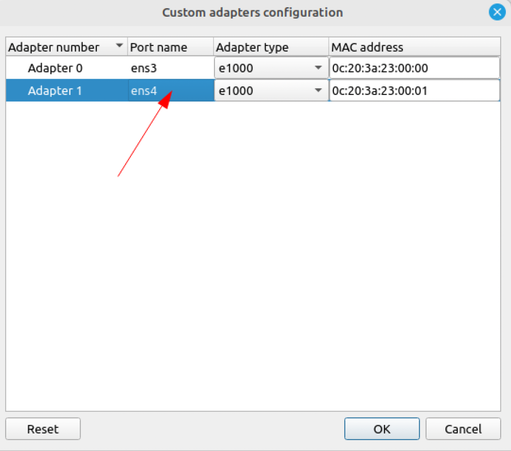
Configuración de adaptadores de red en el Ubuntu Server de GNS3
Es imprescindible seleccionar 2 adaptadores de red desde el menú desplegable de la plantilla de la máquina virtual. Además, se recomienda utilizar la opción "Configure custom adapters" para asignar nombres personalizados y reconocibles a las interfaces, empleando por ejemplo
<code>ens3</code>para la interfaz externa (conectada a NAT/Cloud) y<code>ens4</code>para la interfaz interna (red privada).Asegúrate siempre de que ambos adaptadores estén correctamente configurados antes de iniciar la máquina virtual, para poder distinguir con claridad cada interfaz y evitar problemas posteriores.
Los nombres asignados a las interfaces, como
<code>ens3</code>y<code>ens4</code>, deben coincidir exactamente con los que se usarán en la configuración de red de Netplan dentro del sistema operativo. Esto es fundamental para garantizar la conectividad y evitar errores relacionados con la correspondencia de nombres de puertos.
Por ello, es recomendable visualizar los nombres de las interfaces en el diagrama de GNS3 para asegurar un cableado correcto y facilitar la identificación de cada conexión.
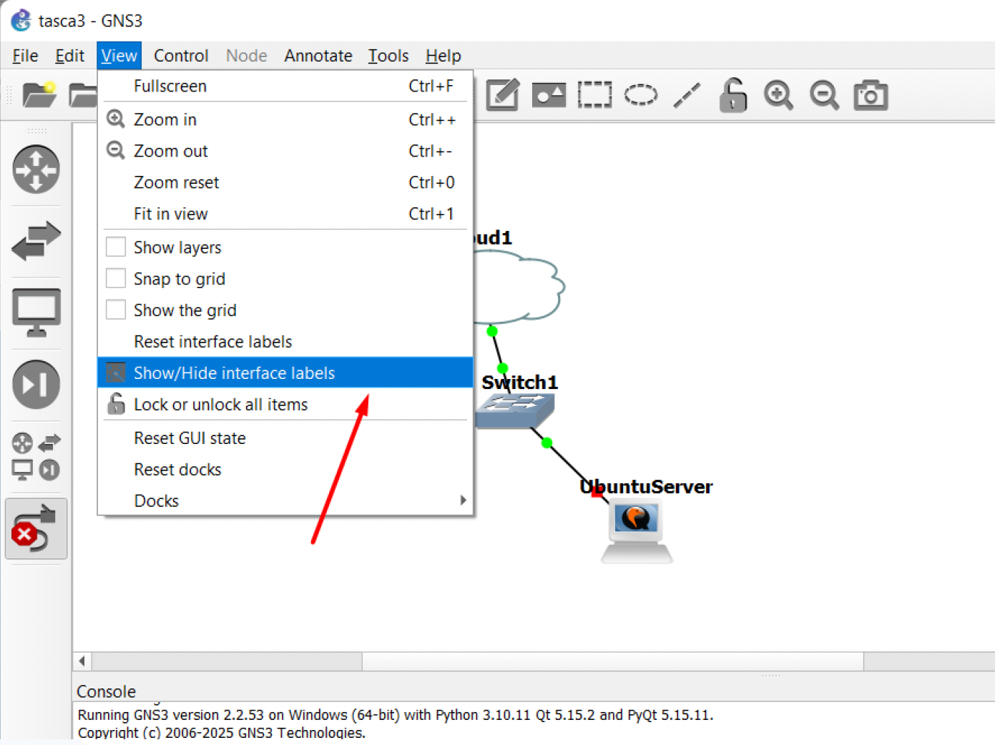
Mostrar nombres de interfaces en GNS3
En GNS3, para visualizar los nombres de las interfaces en la topología, ve al menú View y selecciona Show/Hide interface labels. Esto es crucial para evitar errores de cableado entre dispositivos, ya que permite identificar visualmente cada interfaz conectada.
2) Instalar SSH y habilitar acceso remoto:
sudo apt update && sudo apt install -y openssh-server
ens3: DHCP (lado externo)ens4: estática10.10.1.1/24
Ejemplo 50-cloud-init.yaml:
network:
version: 2
renderer: networkd
ethernets:
ens3:
dhcp4: yes
ens4:
dhcp4: no
addresses:
- 10.10.1.1/24
sudo netplan apply
ip a
ip route show
5. Enrutamiento y NAT con iptables¶
1) Habilitar reenvío IP:
echo 1 | sudo tee /proc/sys/net/ipv4/ip_forward
# Limpiar
sudo iptables -F
sudo iptables -X
sudo iptables -t nat -F
sudo iptables -Z
# NAT hacia la interfaz externa (ajustar si no es ens3)
sudo iptables -t nat -A POSTROUTING -o ens3 -j MASQUERADE
# Permitir forward entre interfaces
sudo iptables -A FORWARD -i ens3 -o ens4 -j ACCEPT
sudo iptables -A FORWARD -i ens4 -o ens3 -j ACCEPT
Nota: Todo este proceso también se puede automatizar usando el script
firewall.shque se adjunta en la tarea de Aules. Para emplearlo, primero cópialo a la máquina virtual (por ejemplo, utilizandoscp):
scp firewall.sh usuario@IP_MV:/home/usuario/
Luego dale permisos de ejecución y ejecútalo con privilegios de superusuario:
chmod +x firewall.sh
sudo ./firewall.sh
De esta forma se aplican todas las reglas y configuraciones necesarias de forma automática.
6. Persistencia (recomendado)¶
- Instalar
iptables-persistenty guardar reglas:sudo apt update && sudo apt install -y iptables-persistent sudo netfilter-persistent save sudo systemctl enable netfilter-persistent
NOTA
Durante la instalación, aparecerá un mensaje preguntando si deseas guardar las reglas actuales. Selecciona Sí.
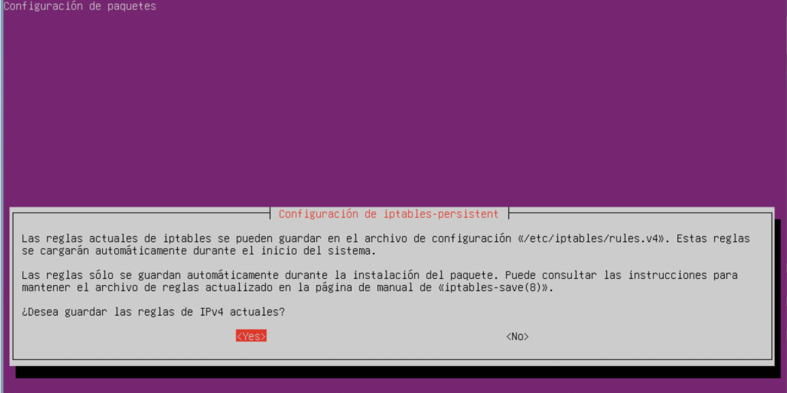
iptables-persistent.- Persistir el reenvío IP en
/etc/sysctl.conf:
Asegúrate de que las reglas se cargan en cada reinicio:
- Activa el servicio para que se inicie automáticamente:
sudo systemctl enable netfilter-persistent - Puedes iniciarlo manualmente con:
sudo systemctl start netfilter-persistent - Si editas manualmente las reglas, vuelve a cargarlas con:
sudo netfilter-persistent reload
Solo nos quedaría hacer persistente el reenvío entre las tarjetas de red.
Para ello, debemos editar el archivo de configuración de sysctl:
sudo nano /etc/sysctl.conf
net.ipv4.ip_forward=1
sudo sysctl -p
7. Configurar el cliente Ubuntu Desktop¶
- Añadir la máquina Ubuntu Desktop al diseño conectada al switch interno. Primero añadiremos el cliente Ubuntu Desktop al diseño, conectado al switch interno. Hemos escogido este cliente para configurar una dirección IP de forma estática desde el entorno gráfico. Sin embargo, puede ser cualquier cliente; también se podría añadir un cliente Windows o una appliance de Firefox, como ya se hizo en la PR302.
Además, para unir el servidor y el cliente añadiremos también al diseño otro switch.
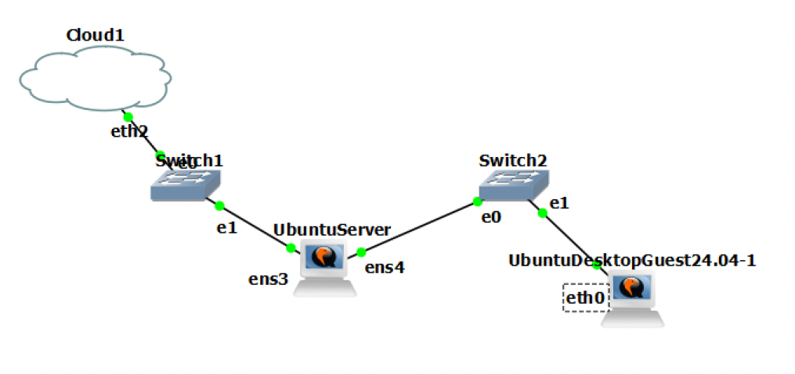
- Encenderla e iniciar sesión en el entorno gráfico.
- Abrir la configuración de red (Network Manager) y editar la conexión cableada:
- IP:
10.10.1.10/24(o similar en la red 10.10.1.0/24) - Puerta de enlace:
10.10.1.1(servidor Ubuntu) - DNS:
8.8.8.8u otro servidor de tu elección.
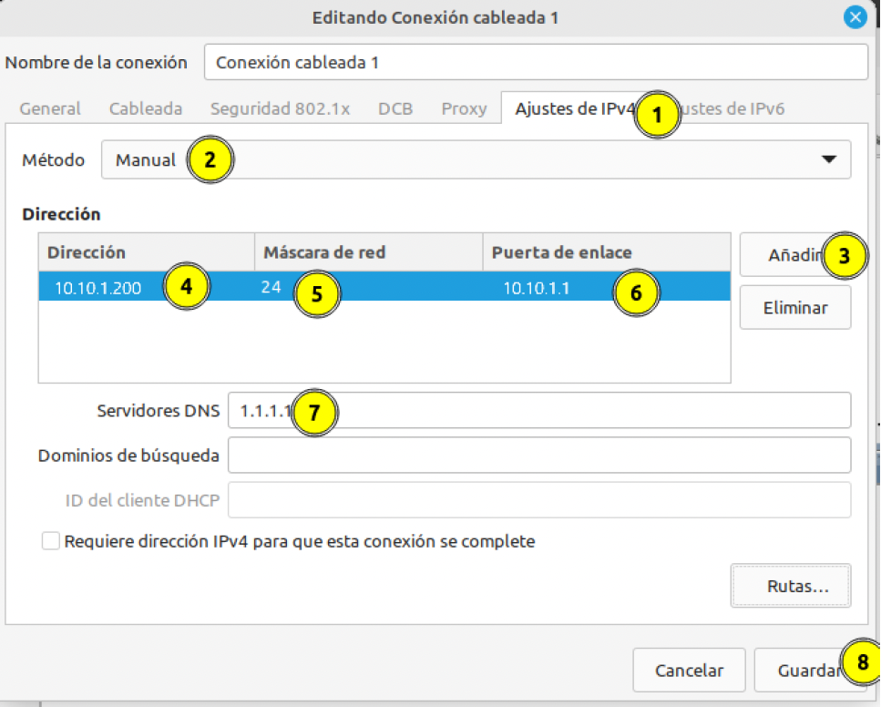
Note
Aplica los cambios y reinicia la conexión de red si es necesario para que la nueva configuración tenga efecto.
- Comprobar en un terminal:
ip a ping 10.10.1.1 # hacia el servidor ping 8.8.8.8 # salida a Internet
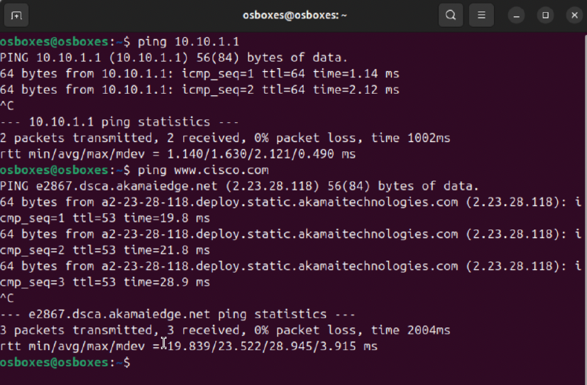
8. Servidor Apache (opcional pero recomendado)¶
En el servidor Ubuntu:
sudo apt update
sudo apt install -y apache2
- Verificar que el servicio está en marcha:
systemctl status apache2 - Desde el cliente Ubuntu Desktop, abrir el navegador y acceder a
http://10.10.1.1/para comprobar que se muestra la página por defecto de Apache.
9. Pruebas de funcionamiento¶
Con todos los elementos encendidos:
- Comprobar que el cliente navega hacia el exterior (por ejemplo,
http://www.cisco.com). - Verificar acceso HTTP al servidor Apache interno.
- Confirmar que los pings entre cliente y servidor funcionan correctamente.
- Comprobar que, tras un reinicio del servidor, las reglas de iptables siguen activas si se ha configurado la persistencia.
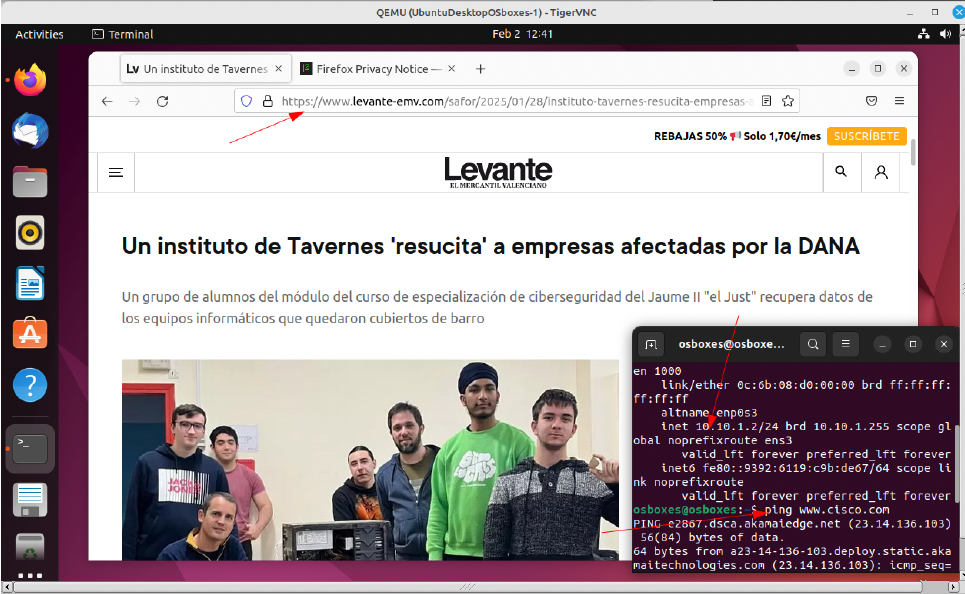
10. WordPress¶
- Importar la appliance WordPress desde el Marketplace (
New Template → Guests → WordPress). - Conectarla al switch interno para que obtenga IP (ya sea por DHCP o configurando IP estática).
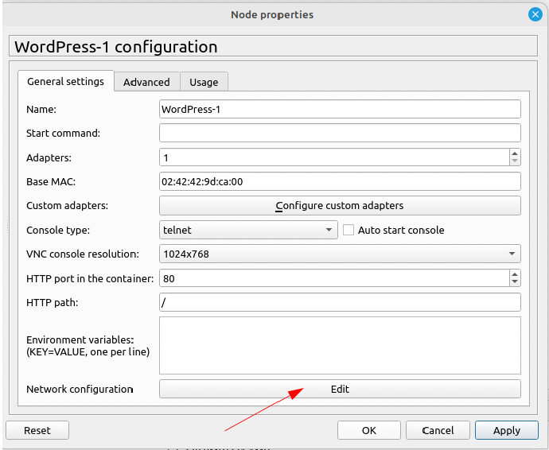
Note
Podríamos poner una dirección IP manualmente o descomentar la parte de DHCP.
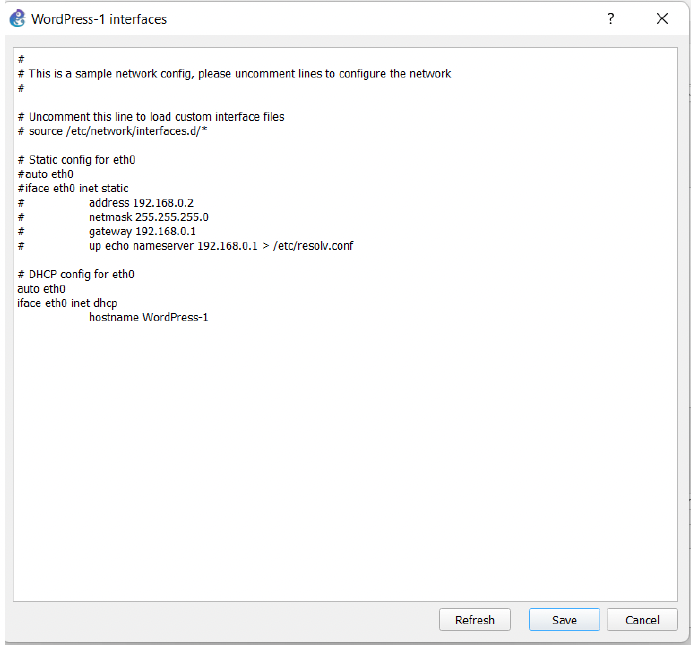
- Seguir el asistente de inicialización de WordPress (crear usuario administrador, contraseña, etc.).
Inicialización de WordPress¶
El servicio de WordPress está instalado dentro de un contenedor Docker. Al arrancar la máquina, el servicio todavía no está inicializado y obtiene una dirección IP, que suele mostrarse en pantalla. Además, se genera una contraseña aleatoria para el usuario root de la instancia de WordPress.
- Lo primero que debemos hacer es establecer una nueva contraseña de root accediendo al terminal de la máquina WordPress. - Abrimos una consola en la propia máquina WordPress (puede ser mediante consola directa desde GNS3 o por SSH si está disponible). - Usamos el comando adecuado para cambiar el password del usuario root según las instrucciones del sistema o del asistente de WordPress. - Es importante anotar la nueva contraseña configurada, ya que nos servirá en los siguientes pasos de la instalación.
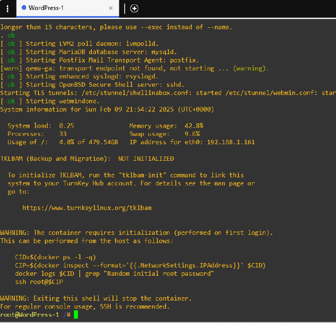
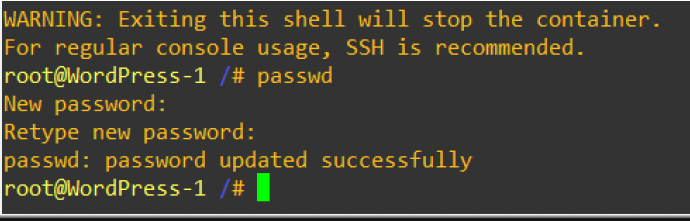
- Desde el cliente Ubuntu Desktop, acceder vía navegador a la IP de la máquina WordPress para validar el despliegue.
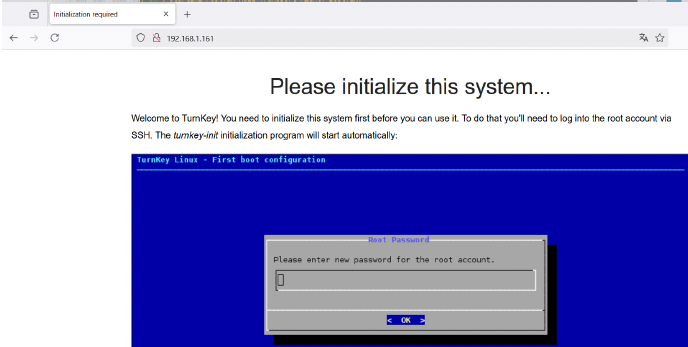
- Al acceder, indica que WordPress no está inicializado y que solo se puede completar la configuración a través de SSH. Entonces, abrimos un terminal y nos conectamos con el usuario root y la contraseña que le hemos asignado previamente.
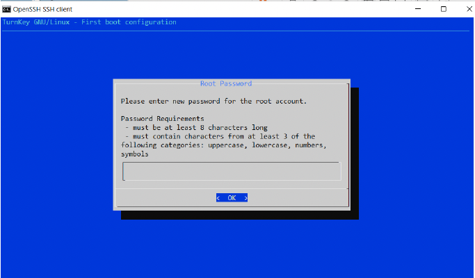
- Después, comienza una serie de ventanas de configuración que nos piden la contraseña de root, la de la base de datos, una cuenta de correo… Vamos rellenando los campos y seleccionamos "Saltar" (skip) en las opciones de seguridad, etc., ya que nuestro objetivo es solo tener un WordPress funcionando.
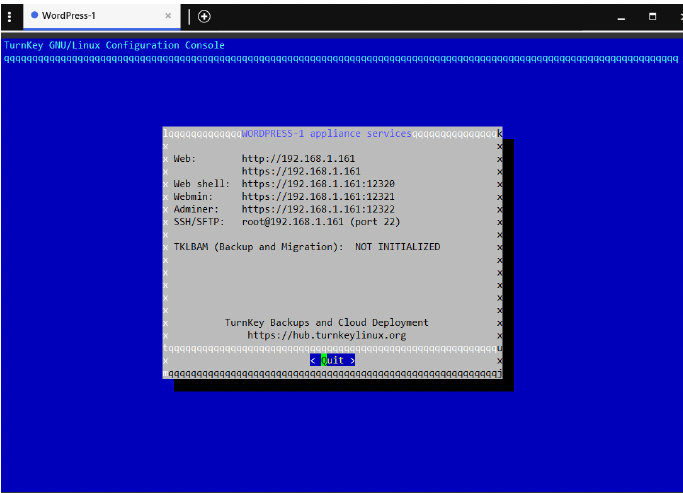
- Al finalizar, salimos de la consola de configuración y, si volvemos a introducir la dirección del equipo en el navegador, ya nos aparece el panel de administración de WordPress.
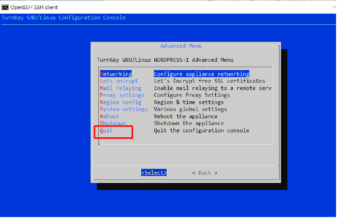
- Introducimos el usuario admin y la contraseña que hemos configurado y ya estaremos dentro del panel de administración de WordPress, listo para poder trabajar en él.
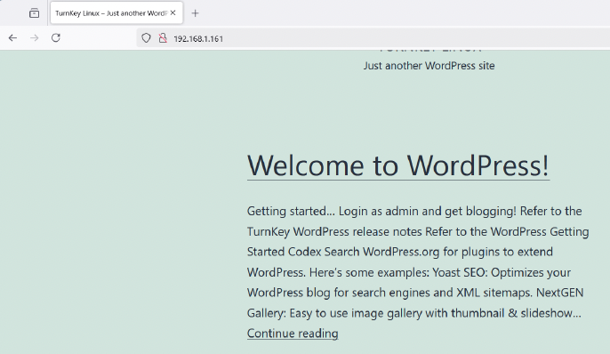
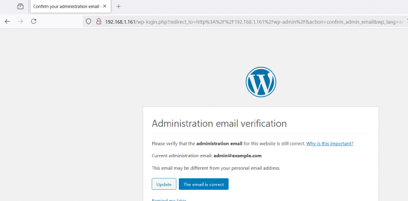
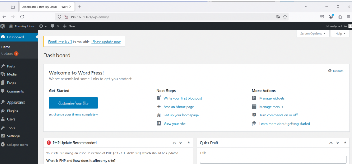